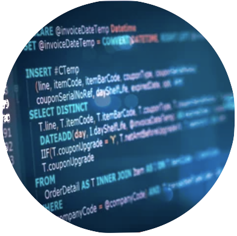
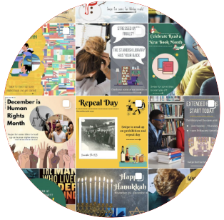

[s]Cube
Technical Intern
With experience in data analysis and report generation, I am skilled in utilizing SQL queries to generate client reports with Crystal Reports and SSRS that are tailored to form requirements. Through the use of SQL, I can extract the information from the datasets that our clients have requested to accuratley retrieve intormation for a given form. I am able to effectively work collaboratively with team members to meet project deadlines and deliver comprehensive results.
Intelligent Retrieval
Research Intern
Made contributions to DARPA's Grounded Artificial Intelligence Language Acquisition (GAILA) program, which aims to develop AI capable of learning language with visual and contextual cues. I implementated new functionality to a Java Swing application system, which uses image analysis results from GE partners to learn new words. Specifically, I assisted in implementing a dialogue model that interacts with a human expert to correct learned knowledge, this is meant to mimic how children learn from parents, teachers, and peers. In Addition I utilized the Pandas Python library to analyze output data from our system.

CURCA Scholars
Research Intern
I have contributed to the NIST TREC-IS Project, aimed at providing emergency service personnel with insights gained from Twitter during crisis situations. I utilized Java for text processing, structuring data and preparing it for machine learning algorithms. In addition, I employed Python for data visualization, utilizing the Pandas and Matplotlib libraries to provide clear and concise visualizations of the data.

Standish Library
Social Media Coordinator
I demonstrated strong communication and creative skills in my work with the Standish Library Instagram account. I worked to create engaging infographics and visuals using Canva, designed to capture the attention of followers and promote the library's resources and services. In addition, I scheduled posts to ensure a steady stream of content and maintain a strong online presence.